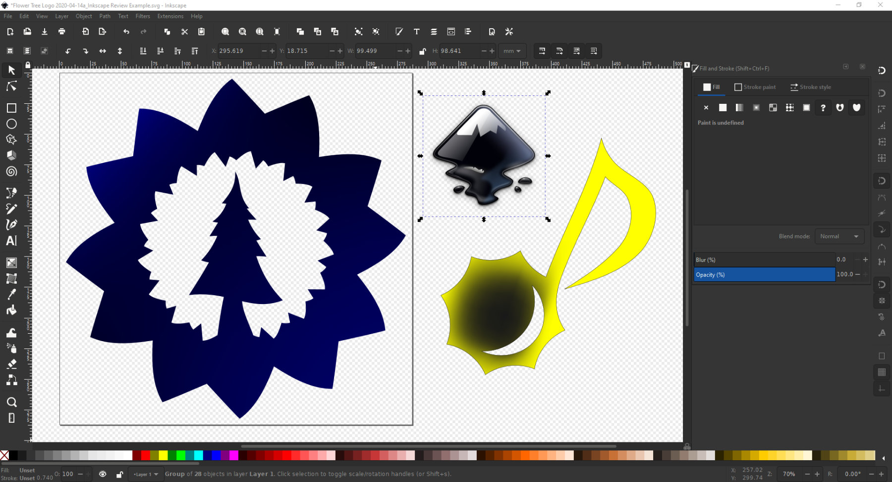

acerca de inkscape
Inkscape es una poderosa herramienta de diseño gráfico vectorial de código abierto, ideal para crear imágenes y gráficos escalables. Si estás trabajando en una página web, Inkscape puede ser muy útil para diseñar elementos visuales como logotipos, iconos, ilustraciones o gráficos personalizados.
¿porque usar inkscape para tu pagina web?
- Diseño vectorial:
- Los gráficos vectoriales (formato SVG) son perfectos para la web porque se escalan sin perder calidad.
- SVG es ligero, optimizado para la web y ampliamente compatible con navegadores modernos.
- codigo abierto y gratuito:
- No necesitas gastar en software costoso. Inkscape es una solución potente y accesible.
- compatibilidad:
- Puedes exportar tus diseños en formatos como SVG, PNG, PDF, y otros.
- Los archivos SVG son fáciles de integrar directamente en HTML y CSS.
este es el logo de inkscape y algunos ejemplo de lo que se puede hacer.

